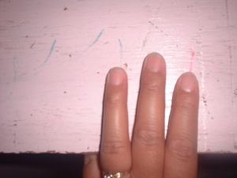

sulu 
/sulu/
n.
“finger/toe_nail/hoof”
1.
n.
a finger or toe nail, including those of animals
Wrd.Gloss: fingernail; toenail; hoof
Ka seini ne lalag iyan sika se diyè te me kemel ta ka diyè te pulipusan ne layun ta egtempuhi ke egmalayat e.
Sambayi e kun pa te nilkatil nu su egtempuhan ku pad ka sulu ku.
Can I borrow your nail cutter? cause im going to cut my finger nails.
Cult. It is said that when God (Manama) created man and woman that they pulled away from him and he only held them by the ends of their fingers and toes. Because of this, only the fingernails and toenails are made of the superior material that doesn't get cut easily – the rest of the body is covered with an inferior skin that is easily cut.
Eng. fingernail; toenail; nail (finger, toe); hoof; hooves
Tag. kukó
Ceb. kuku
Ilo.: kukó
Tigwanon: sulu
Binukid: sulu
WBM: sulu
Ilianen: sulu
Tagbawa: sulu
Cotabato Manobo: sulu
Tasaday: sulu
Sarangani: solo
Dibabawon: suu
Cagayano: sułu
Obo: suluʔ
Proto: sulu
OCM: Ethnoanatomy (826)
DDP: Finger, toe (2.1.3.3)
Online dict status: -
Usage level: F
2.
n.
(igpanulu, igpaN-) nail cutter
Due ipanulu ta due? Su mallayat e ka sulu ku.
Do we have nail cutters there? Because my fingernails are long.
Eng. nail cutter
Tag. panghinukókukó
Ceb. panghinguko
Ilo.: pagíkukú
OCM: Utensils (415), Personal Hygiene (515)
Online dict status: -
Usage level: M
3.
vi.
for someone (egpanulu, migpanulu/impanulu, panulu, agent, eg><ø-paN-) to cut nails
Egpanulu a pad su mahalang e ka me sulu ku.
Im going to cut my finger nails cause it is already sharp.
Eng. cut nails
Tag. manghinukó; kukó
Ceb. manghinguko
Ilo.: agíkukú
OCM: Personal Hygiene (515)
DDP: Finger, toe (2.1.3.3)
Online dict status: -
Usage level: B
Updated by: RJH,QDL,RAA,RJH
Last updated: 29/May/2013
"igpanulu" in healthbook "Mania te keilangan neg lu-luan ta ka me belad ta?"
"impanulu" in healthbook "Mania te keilangan neg lu-luan ta ka me belad ta?"
"migpanulu" in healthbook "Mania te keilangan neg lu-luan ta ka me belad ta?"
"impanulu" in healthbook "Mania te keilangan neg lu-luan ta ka me belad ta?"
"panulu" in healthbook "Nekey-a ka kahew?"
"sulu" in song "Uyana nu ka sulu"
"sulu" in song "Uyana nu ka sulu"
"sulu" in song "Uyana nu ka sulu"
This page last updated: 28-Dec-2019
Copyright © 2009-2014, Matigsalug Language Christian Association, Inc